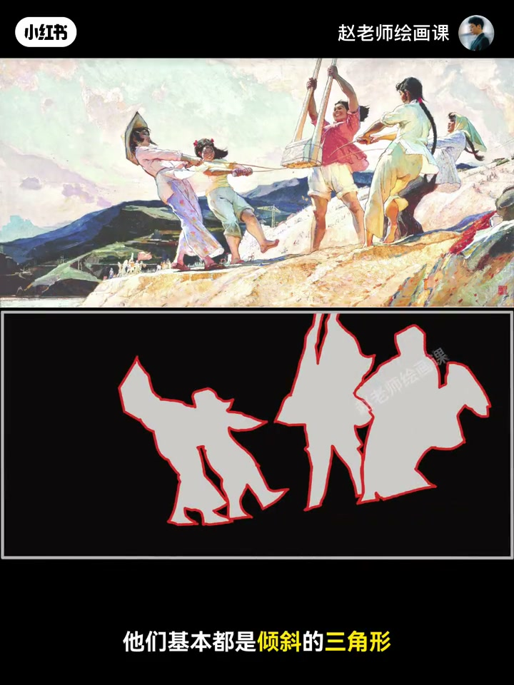
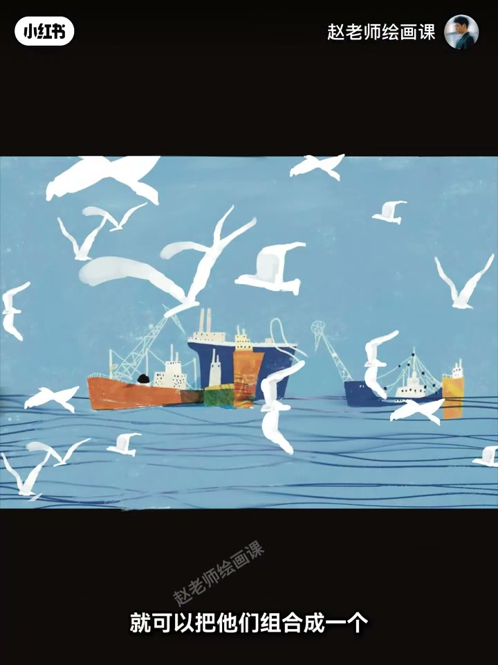
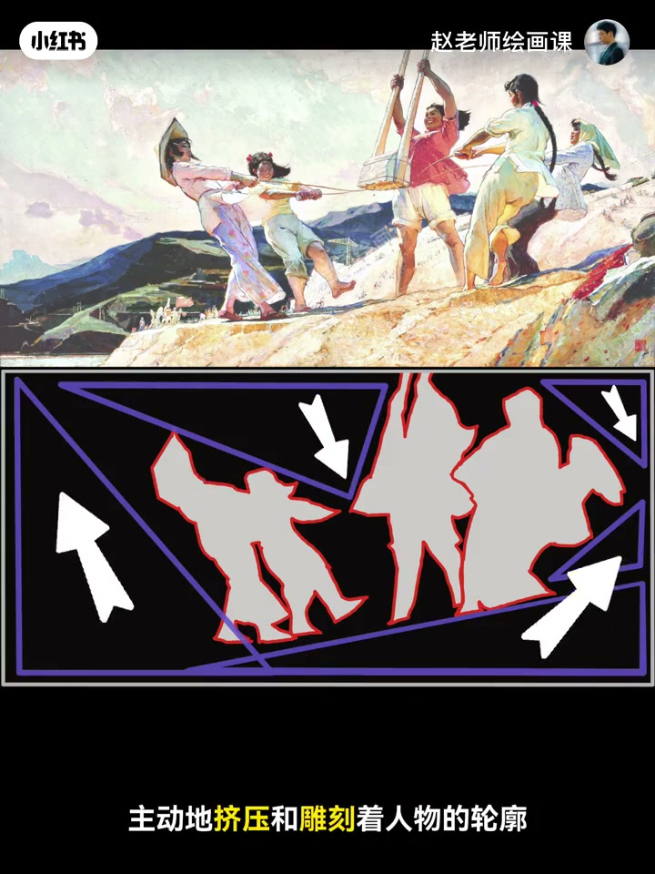
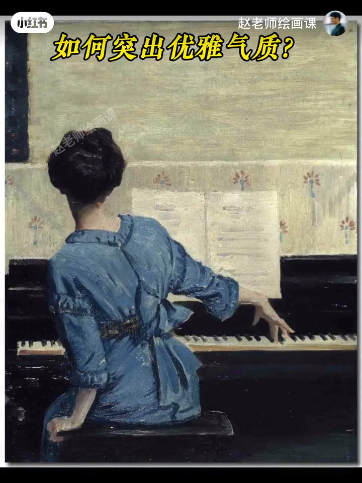

内容要点
细节满满远看却乱，往往因为忽视了形状。经典油画《夯歌》里人物轮廓多为倾斜的不稳定三角形——天生带动感，画家靠它把打夯昂扬劲画得淋漓尽致。用法：海鸥斜三角阵形显速度；队列整齐有力；救灾人物位显紧迫。看完正形再看空隙＝负形：负形像刻刀主动挤压雕刻人物轮廓，让主体更突出。温情可用带方向的负形引导视线；包裹感靠背景负形；弹琴女人右侧大面积负形一挤，向上高雅动势就出来。作业：用不稳定三角或负形强化正形拍／画一张。
知识结构
不稳定三角＝动感；海鸥／队列／救灾用法。
空隙如刻刀强化正形；温情／包裹／优雅。
三角或负形强化正形交一张。
远看不乱先管形状：用不稳定三角推动势，用负形当刻刀挤出更有力的正形。
00:00-01:19不稳定三角：动感开关
细节满满远看却乱，因为忽视了形状。走进经典油画《夯歌》：人物轮廓基本都是倾斜的三角形；不稳定三角天生带动感，画家靠它把昂扬向上的劲画淋漓尽致。想让画面有动感，多用不稳定三角形。
海鸥飞过海面可组成向前冲刺的斜三角阵形；队伍整齐有力、消防救灾紧迫感，都可用不稳定三角安排人物位置。00:30／00:56。


01:19-02:18负形：挤压出更有力的正形
正形是人物本体；它们之间的空隙是负形。负形像一把把刻刀主动挤压、雕刻人物轮廓，让主体更加突出有力——用负形的力量强化正形。
温情画面可让上下流出的负形带方向感引导视线；被窝女孩用背景负形造包裹感；弹琴女人右侧大面积负形一挤压，向上高雅动势自然出来。01:30／02:08。


02:18-02:39作业：三角或负形任选其一
请拍或画一张运用了不稳定三角、或用负形强化正形的作品。想系统掌握构图法则底层逻辑，可关注构成系统课预告。
完整转录（71段）
以下文本由 Whisper medium 模型自动转录，可能存在少量识别误差，已尽可能修正。
为什么你的画面细节满满
但远看
而很乱
因为你忽视了它
形状
来 让我们一起走进经典油画
夯歌
仔细观察所有人物轮廓
你发现没
它们基本都是倾斜的三角形
这种不稳定三角
天生就带着动感
画家就是靠它
把打撼那种昂扬向上的劲
画得淋漓尽致
记住今天的第一个指示点
想让画面有动感
多用不稳定的三角形
那该如何运用呢
比如想表现一群海鸥
飞过海面的速度感
就可以把它们组合成一个
向前冲刺的斜三角阵形
画面冲击力马上显现
再比如
我们想表现队伍整齐划一
有充满力量
照片可以这样拍
还有这样
想表现消防救灾的紧迫感
用不稳定三角来安排人物位置
紧张氛围
立刻出现
看完了人物本体
也就是正形
我们再聚焦到它们之间的空隙
也就是附形
你发现了吗
这些附形
像一把把刻刀主动的挤压
和雕刻着人物的轮廓
让主体更加突出有力
这就是第二个指示点
用附形的力量强化正形
想表现温情
比如这幅奶奶抱着猫的温情画面
除了动作
我们可以让上下流出的附形
带有一些方向感
用来引导视线
情绪瞬间就交融起来了
想要表现包裹感
来看这幅被窝中的女孩
我们利用背景的附形
就可以制造这样的感觉
那如何凸显这位弹钢琴女人的优雅气质呢
用右侧大面积的附形一挤压
人物向上的高雅动势
自然就出来了
这就是附形的魅力
今天的作业来了
请拍或画一张
运用了不稳定三角
或复形强化正形的作品
评论区等着你的美照
如果想系统掌握
所有这些构图法则的底层逻辑
千万别错过
10月20号开班的构成系统课程
下期见喽
拜拜